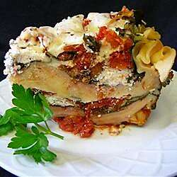

Slow cooked lasagna

Delicious lasagna that's so easy to make in the slow cooker!
Prep: 20 mins
Cook: 2 hrs
Total: 2hrs 20mins
Servings: 6
Yeilds: 6 servings
Ingredients
- 2 (28 ounce) cans diced tomatoes
- 3 cloves garlic, finely chopped
- ¼ cup fresh oregano, chopped
- ¼ cup fresh oregano, chopped
- ½ teaspoon ground black pepper
- 1 (16 ounce) container ricotta cheese
- ½ cup chopped flat-leaf parsley
- ½ cup grated Parmesan cheese
- ¼ teaspoon ground black pepper
- 1 (12 ounce) package dry lasagna noodles
- 1 bunch Swiss chard, torn into several pieces
- 1 (12 ounce) package shredded mozzarella cheese
- salt and ground black pepper to taste
Directions
- Mix diced tomatoes, garlic, oregano, 1/2 teaspoon salt, and 1/2 teaspoon pepper in a bowl.
- Mix ricotta cheese, parsley, Parmesan cheese, and 1/4 teaspoon pepper in a separate bowl.
- Spoon about 1/3 the tomato mixture into the bottom of a slow cooker. Top with a single layer of
lasagna noodles, breaking them as needed to fit the shape of the crock. Layer about half the Swiss
chard atop the noodles. Dollop about 1/3 of the ricotta cheese mixture atop the chard and spread another
1/3 the tomato mixture over the ricotta. Sprinkle about 1/3 of the mozzarella cheese over the tomato mixture.
Repeat layering of lasagna noodles, Swiss chard, ricotta mixture, tomato mixture, and mozzarella cheese, respectively.
- Cook on Low until the lasagna noodles are tender, 2 to 3 hours.
Nutrition
Per Serving: 546 calories; protein 35.6g; carbohydrates 57.9g; fat 18.4g; cholesterol 65.6mg; sodium 1238.3mg